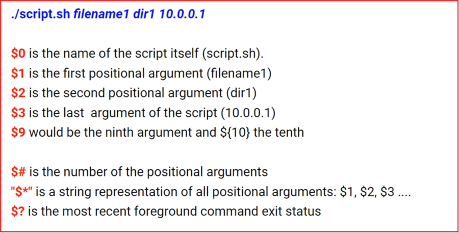
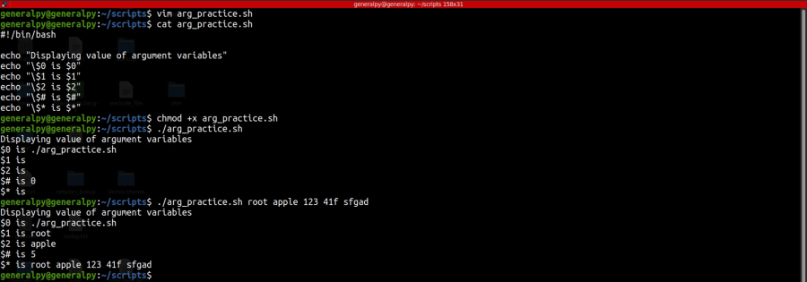

Arguments are the items which follow script name.
sudo apt install nginx
Here apt is the command and install and nginx are arguments.
Arguments are very useful when we don't want to accept user input non interactively.
There are special variables predefined to hold these arguments. By default these variables are empty.

Above is list of predefined variables which are used to store arguments.
Let's create an example script using positional arguments.
